Inferring from AssociateTracks414452.csv Data¶
[1]:
# pip install matplotlib==3.3.4 -> Optional
[2]:
import os
import sys
import glob
import h5py
import math
import matplotlib.pyplot as plt
import seaborn as sns
import numpy as np
import pandas as pd
import tensorflow as tf
from tensorflow import keras
[3]:
import DGCNN_toolkit as nn
import analysis_toolkit as atk
[4]:
df = pd.read_csv("AssociateTracks414452.csv")
df.head()
[4]:
| iEvent | iHit | planeRec | wireRec | timeRec | HitRecTime0 | HitRecTime1 | Charge0 | Charge1 | Ampl0 | Ampl1 | x | y | z | |
|---|---|---|---|---|---|---|---|---|---|---|---|---|---|---|
| 0 | 0 | 0 | 1 | 274 | -3.944810e-07 | -3.937450e-07 | -3.901820e-07 | 1.06798 | 0.515748 | -100 | -100 | -4.89203 | -24.8048 | -68.341800 |
| 1 | 0 | 1 | 2 | 455 | -4.065640e-07 | -4.040480e-07 | -4.040480e-07 | 1.36176 | 1.361760 | -100 | -100 | -5.23458 | -22.0926 | 0.158286 |
| 2 | 0 | 2 | 3 | 613 | -3.314910e-07 | -3.289760e-07 | -3.289760e-07 | 4.85136 | 4.851360 | -100 | -100 | 17.01400 | -13.7759 | 0.264502 |
| 3 | 0 | 3 | 3 | 659 | -4.148150e-07 | -4.135760e-07 | -4.110250e-07 | 1.43517 | 0.970757 | -100 | -100 | -8.14744 | -21.1832 | -42.452700 |
| 4 | 0 | 4 | 3 | 660 | -4.209670e-07 | -4.187150e-07 | -4.181900e-07 | 1.52248 | 1.241020 | -100 | -100 | -12.14240 | -18.4606 | -11.032600 |
[5]:
atk.sup_plot(df,400)
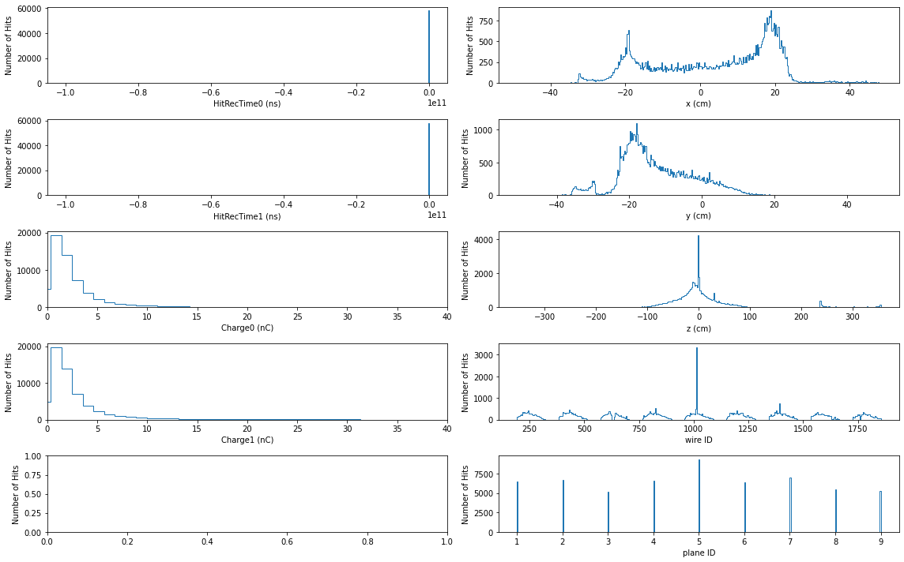
[6]:
# Clearing Phase
clear_df = df[(df["Charge0"] != df["Charge1"]) &
(df.z > -100) &
(df.z < 100) &
(df.x > -30) &
(df.x < 30) &
(df.y > -30) &
(df.y < 30) &
(df.timeRec >-600*1e-9) &
(df.timeRec <-200*1e-9) &
(df.HitRecTime0 >-1000*1e-9) &
(df.HitRecTime0 <0) &
(df.HitRecTime1 >-1000*1e-9) &
(df.HitRecTime1 <0)
].dropna()
[7]:
atk.sup_plot(clear_df, 400, savename="clear_df_all.png")
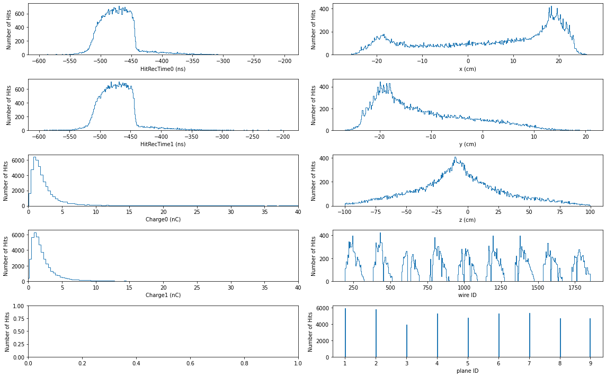
[8]:
atk.sup_plot(clear_df, 100, savename="clear_df_all.png")
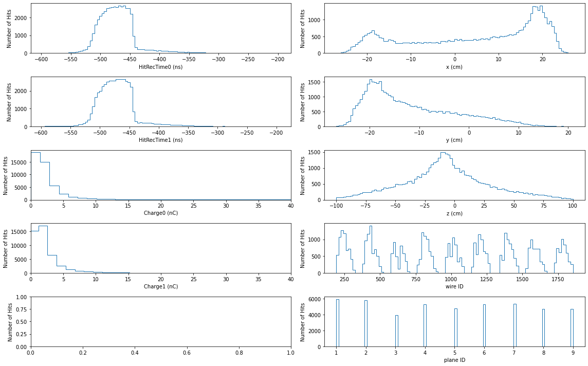
[9]:
## Problem below.
# After some cuts we have non-subsequent hit indexing.
# Therefore, a reindexing of iHits is needed.
# Or just throw away randomly hits from events that have more than 432 hits.
[10]:
#### This is a problem. The network was trained with 432 points.
# It cannot extrapolate automatically.
# We need to cut the events with more hits than 432.
(clear_df.shape[0] - clear_df[clear_df.iHit < 432].shape[0]) / (clear_df.shape[0])
[10]:
0.0
[11]:
# Okay we lost 0.0% of the data.
crop_df = clear_df[clear_df.iHit < 432]
crop_df = crop_df.reset_index(drop=True)
crop_df
[11]:
| iEvent | iHit | planeRec | wireRec | timeRec | HitRecTime0 | HitRecTime1 | Charge0 | Charge1 | Ampl0 | Ampl1 | x | y | z | |
|---|---|---|---|---|---|---|---|---|---|---|---|---|---|---|
| 0 | 0 | 0 | 1 | 274 | -3.944810e-07 | -3.937450e-07 | -3.901820e-07 | 1.067980 | 0.515748 | -100 | -100 | -4.89203 | -24.8048 | -68.34180 |
| 1 | 0 | 3 | 3 | 659 | -4.148150e-07 | -4.135760e-07 | -4.110250e-07 | 1.435170 | 0.970757 | -100 | -100 | -8.14744 | -21.1832 | -42.45270 |
| 2 | 0 | 4 | 3 | 660 | -4.209670e-07 | -4.187150e-07 | -4.181900e-07 | 1.522480 | 1.241020 | -100 | -100 | -12.14240 | -18.4606 | -11.03260 |
| 3 | 0 | 5 | 4 | 819 | -4.288450e-07 | -4.267700e-07 | -4.258950e-07 | 1.638570 | 1.475930 | -100 | -100 | 6.74216 | -20.1475 | -15.82110 |
| 4 | 0 | 6 | 4 | 820 | -5.095660e-07 | -5.071270e-07 | -5.069790e-07 | 4.001080 | 4.054890 | -100 | -100 | 7.68226 | -19.6260 | -1.34661 |
| ... | ... | ... | ... | ... | ... | ... | ... | ... | ... | ... | ... | ... | ... | ... |
| 45782 | 3093 | 2 | 3 | 656 | -4.488190e-07 | -4.454320e-07 | -4.471780e-07 | 1.152500 | 1.616040 | -100 | -100 | -14.42050 | -17.1712 | 30.56040 |
| 45783 | 3093 | 4 | 6 | 1244 | -5.039820e-07 | -5.009690e-07 | -5.019740e-07 | 4.568240 | 5.726640 | -100 | -100 | -14.28340 | -14.1802 | 22.02150 |
| 45784 | 3093 | 5 | 7 | 1426 | -4.586560e-07 | -4.553610e-07 | -4.569320e-07 | 2.251740 | 2.870170 | -100 | -100 | -12.92460 | -14.7115 | 23.19270 |
| 45785 | 3093 | 6 | 8 | 1628 | -4.978420e-07 | -4.947950e-07 | -4.958720e-07 | 1.580360 | 1.600990 | -100 | -100 | -13.69430 | -12.9596 | 17.83370 |
| 45786 | 3093 | 7 | 9 | 1811 | -4.841770e-07 | -4.802230e-07 | -4.831150e-07 | 0.927226 | 1.270110 | -100 | -100 | -13.96700 | -12.4149 | 38.90280 |
45787 rows × 14 columns
[12]:
# Max number of hits in an event before cropping
clear_df.iEvent.value_counts().max()
[12]:
87
[13]:
# Max number of hits in an event after cropping
crop_df.iEvent.value_counts().max()
[13]:
87
[14]:
# This knowledge comes from the training phase.
# In the future, we may also obtain these from the loaded model.
num_classes = 5
num_hits = 432
[15]:
# The dataframe must be split into data and labels
data, label = nn.prepare_input(crop_df, "real", num_hits)
[16]:
# This is only an inference session. Only test Dataset object is present.
test = nn.Dataset(data, label, num_classes)
[17]:
input_shapes = {"points": (432,3),
"features": (432,3),
"mask": (432,1)}
model = nn.get_DGCNN(num_classes, input_shapes)
[18]:
model.compile(loss='categorical_crossentropy',
optimizer=keras.optimizers.Adam(learning_rate=nn.lr_schedule(0)),
metrics=["accuracy"])
model.summary()
Model: "DGCNN_SG"
__________________________________________________________________________________________________
Layer (type) Output Shape Param # Connected to
==================================================================================================
mask (InputLayer) [(None, 432, 1)] 0
__________________________________________________________________________________________________
tf_op_layer_NotEqual (TensorFlo [(None, 432, 1)] 0 mask[0][0]
__________________________________________________________________________________________________
tf_op_layer_Cast (TensorFlowOpL [(None, 432, 1)] 0 tf_op_layer_NotEqual[0][0]
__________________________________________________________________________________________________
tf_op_layer_Equal (TensorFlowOp [(None, 432, 1)] 0 tf_op_layer_Cast[0][0]
__________________________________________________________________________________________________
tf_op_layer_Cast_1 (TensorFlowO [(None, 432, 1)] 0 tf_op_layer_Equal[0][0]
__________________________________________________________________________________________________
tf_op_layer_Mul (TensorFlowOpLa [(None, 432, 1)] 0 tf_op_layer_Cast_1[0][0]
__________________________________________________________________________________________________
points (InputLayer) [(None, 432, 3)] 0
__________________________________________________________________________________________________
tf_op_layer_Add (TensorFlowOpLa [(None, 432, 3)] 0 tf_op_layer_Mul[0][0]
points[0][0]
__________________________________________________________________________________________________
features (InputLayer) [(None, 432, 3)] 0
__________________________________________________________________________________________________
tf_op_layer_Transpose (TensorFl [(None, 3, 432)] 0 tf_op_layer_Add[0][0]
__________________________________________________________________________________________________
tf_op_layer_ExpandDims (TensorF [(None, 432, 1, 3)] 0 features[0][0]
__________________________________________________________________________________________________
tf_op_layer_Mul_1 (TensorFlowOp [(None, 432, 3)] 0 tf_op_layer_Add[0][0]
tf_op_layer_Add[0][0]
__________________________________________________________________________________________________
tf_op_layer_BatchMatMulV2 (Tens [(None, 432, 432)] 0 tf_op_layer_Add[0][0]
tf_op_layer_Transpose[0][0]
__________________________________________________________________________________________________
tf_op_layer_Mul_2 (TensorFlowOp [(None, 432, 3)] 0 tf_op_layer_Add[0][0]
tf_op_layer_Add[0][0]
__________________________________________________________________________________________________
DGCNN_SG_fts_bn (BatchNormaliza (None, 432, 1, 3) 12 tf_op_layer_ExpandDims[0][0]
__________________________________________________________________________________________________
tf_op_layer_Sum (TensorFlowOpLa [(None, 432, 1)] 0 tf_op_layer_Mul_1[0][0]
__________________________________________________________________________________________________
tf_op_layer_Mul_3 (TensorFlowOp [(None, 432, 432)] 0 tf_op_layer_BatchMatMulV2[0][0]
__________________________________________________________________________________________________
tf_op_layer_Sum_1 (TensorFlowOp [(None, 432, 1)] 0 tf_op_layer_Mul_2[0][0]
__________________________________________________________________________________________________
tf_op_layer_Squeeze (TensorFlow [(None, 432, 3)] 0 DGCNN_SG_fts_bn[0][0]
__________________________________________________________________________________________________
tf_op_layer_Sub (TensorFlowOpLa [(None, 432, 432)] 0 tf_op_layer_Sum[0][0]
tf_op_layer_Mul_3[0][0]
__________________________________________________________________________________________________
tf_op_layer_Transpose_1 (Tensor [(None, 1, 432)] 0 tf_op_layer_Sum_1[0][0]
__________________________________________________________________________________________________
tf_op_layer_Shape (TensorFlowOp [(3,)] 0 tf_op_layer_Squeeze[0][0]
__________________________________________________________________________________________________
tf_op_layer_AddV2 (TensorFlowOp [(None, 432, 432)] 0 tf_op_layer_Sub[0][0]
tf_op_layer_Transpose_1[0][0]
__________________________________________________________________________________________________
tf_op_layer_strided_slice_1 (Te [()] 0 tf_op_layer_Shape[0][0]
__________________________________________________________________________________________________
tf_op_layer_Neg (TensorFlowOpLa [(None, 432, 432)] 0 tf_op_layer_AddV2[0][0]
__________________________________________________________________________________________________
tf_op_layer_Range (TensorFlowOp [(None,)] 0 tf_op_layer_strided_slice_1[0][0]
__________________________________________________________________________________________________
tf_op_layer_TopKV2 (TensorFlowO [(None, 432, 21), (N 0 tf_op_layer_Neg[0][0]
__________________________________________________________________________________________________
tf_op_layer_Reshape (TensorFlow [(None, 1, 1, 1)] 0 tf_op_layer_Range[0][0]
__________________________________________________________________________________________________
tf_op_layer_strided_slice (Tens [(None, 432, 20)] 0 tf_op_layer_TopKV2[0][1]
__________________________________________________________________________________________________
tf_op_layer_Tile (TensorFlowOpL [(None, 432, 20, 1)] 0 tf_op_layer_Reshape[0][0]
__________________________________________________________________________________________________
tf_op_layer_ExpandDims_1 (Tenso [(None, 432, 20, 1)] 0 tf_op_layer_strided_slice[0][0]
__________________________________________________________________________________________________
tf_op_layer_ExpandDims_2 (Tenso [(None, 432, 1, 3)] 0 tf_op_layer_Squeeze[0][0]
__________________________________________________________________________________________________
tf_op_layer_concat (TensorFlowO [(None, 432, 20, 2)] 0 tf_op_layer_Tile[0][0]
tf_op_layer_ExpandDims_1[0][0]
__________________________________________________________________________________________________
tf_op_layer_Tile_1 (TensorFlowO [(None, 432, 20, 3)] 0 tf_op_layer_ExpandDims_2[0][0]
__________________________________________________________________________________________________
tf_op_layer_GatherNd (TensorFlo [(None, 432, 20, 3)] 0 tf_op_layer_Squeeze[0][0]
tf_op_layer_concat[0][0]
__________________________________________________________________________________________________
tf_op_layer_Sub_1 (TensorFlowOp [(None, 432, 20, 3)] 0 tf_op_layer_GatherNd[0][0]
tf_op_layer_Tile_1[0][0]
__________________________________________________________________________________________________
tf_op_layer_concat_1 (TensorFlo [(None, 432, 20, 6)] 0 tf_op_layer_Tile_1[0][0]
tf_op_layer_Sub_1[0][0]
__________________________________________________________________________________________________
DGCNN_SG_EdgeConv0_conv0 (Conv2 (None, 432, 20, 64) 384 tf_op_layer_concat_1[0][0]
__________________________________________________________________________________________________
DGCNN_SG_EdgeConv0_bn0 (BatchNo (None, 432, 20, 64) 256 DGCNN_SG_EdgeConv0_conv0[0][0]
__________________________________________________________________________________________________
DGCNN_SG_EdgeConv0_act0 (Activa (None, 432, 20, 64) 0 DGCNN_SG_EdgeConv0_bn0[0][0]
__________________________________________________________________________________________________
DGCNN_SG_EdgeConv0_conv1 (Conv2 (None, 432, 20, 64) 4096 DGCNN_SG_EdgeConv0_act0[0][0]
__________________________________________________________________________________________________
DGCNN_SG_EdgeConv0_bn1 (BatchNo (None, 432, 20, 64) 256 DGCNN_SG_EdgeConv0_conv1[0][0]
__________________________________________________________________________________________________
DGCNN_SG_EdgeConv0_act1 (Activa (None, 432, 20, 64) 0 DGCNN_SG_EdgeConv0_bn1[0][0]
__________________________________________________________________________________________________
tf_op_layer_ExpandDims_3 (Tenso [(None, 432, 1, 3)] 0 tf_op_layer_Squeeze[0][0]
__________________________________________________________________________________________________
DGCNN_SG_EdgeConv0_conv2 (Conv2 (None, 432, 20, 64) 4096 DGCNN_SG_EdgeConv0_act1[0][0]
__________________________________________________________________________________________________
DGCNN_SG_EdgeConv0_sc_conv (Con (None, 432, 1, 64) 192 tf_op_layer_ExpandDims_3[0][0]
__________________________________________________________________________________________________
DGCNN_SG_EdgeConv0_bn2 (BatchNo (None, 432, 20, 64) 256 DGCNN_SG_EdgeConv0_conv2[0][0]
__________________________________________________________________________________________________
DGCNN_SG_EdgeConv0_sc_bn (Batch (None, 432, 1, 64) 256 DGCNN_SG_EdgeConv0_sc_conv[0][0]
__________________________________________________________________________________________________
DGCNN_SG_EdgeConv0_act2 (Activa (None, 432, 20, 64) 0 DGCNN_SG_EdgeConv0_bn2[0][0]
__________________________________________________________________________________________________
tf_op_layer_Squeeze_1 (TensorFl [(None, 432, 64)] 0 DGCNN_SG_EdgeConv0_sc_bn[0][0]
__________________________________________________________________________________________________
tf_op_layer_Max (TensorFlowOpLa [(None, 432, 64)] 0 DGCNN_SG_EdgeConv0_act2[0][0]
__________________________________________________________________________________________________
tf_op_layer_AddV2_1 (TensorFlow [(None, 432, 64)] 0 tf_op_layer_Squeeze_1[0][0]
tf_op_layer_Max[0][0]
__________________________________________________________________________________________________
DGCNN_SG_EdgeConv0_sc_act (Acti (None, 432, 64) 0 tf_op_layer_AddV2_1[0][0]
__________________________________________________________________________________________________
tf_op_layer_Add_1 (TensorFlowOp [(None, 432, 64)] 0 tf_op_layer_Mul[0][0]
DGCNN_SG_EdgeConv0_sc_act[0][0]
__________________________________________________________________________________________________
tf_op_layer_Transpose_2 (Tensor [(None, 64, 432)] 0 tf_op_layer_Add_1[0][0]
__________________________________________________________________________________________________
tf_op_layer_Mul_4 (TensorFlowOp [(None, 432, 64)] 0 tf_op_layer_Add_1[0][0]
tf_op_layer_Add_1[0][0]
__________________________________________________________________________________________________
tf_op_layer_BatchMatMulV2_1 (Te [(None, 432, 432)] 0 tf_op_layer_Add_1[0][0]
tf_op_layer_Transpose_2[0][0]
__________________________________________________________________________________________________
tf_op_layer_Mul_5 (TensorFlowOp [(None, 432, 64)] 0 tf_op_layer_Add_1[0][0]
tf_op_layer_Add_1[0][0]
__________________________________________________________________________________________________
tf_op_layer_Sum_2 (TensorFlowOp [(None, 432, 1)] 0 tf_op_layer_Mul_4[0][0]
__________________________________________________________________________________________________
tf_op_layer_Mul_6 (TensorFlowOp [(None, 432, 432)] 0 tf_op_layer_BatchMatMulV2_1[0][0]
__________________________________________________________________________________________________
tf_op_layer_Sum_3 (TensorFlowOp [(None, 432, 1)] 0 tf_op_layer_Mul_5[0][0]
__________________________________________________________________________________________________
tf_op_layer_Sub_2 (TensorFlowOp [(None, 432, 432)] 0 tf_op_layer_Sum_2[0][0]
tf_op_layer_Mul_6[0][0]
__________________________________________________________________________________________________
tf_op_layer_Transpose_3 (Tensor [(None, 1, 432)] 0 tf_op_layer_Sum_3[0][0]
__________________________________________________________________________________________________
tf_op_layer_Shape_1 (TensorFlow [(3,)] 0 DGCNN_SG_EdgeConv0_sc_act[0][0]
__________________________________________________________________________________________________
tf_op_layer_AddV2_2 (TensorFlow [(None, 432, 432)] 0 tf_op_layer_Sub_2[0][0]
tf_op_layer_Transpose_3[0][0]
__________________________________________________________________________________________________
tf_op_layer_strided_slice_3 (Te [()] 0 tf_op_layer_Shape_1[0][0]
__________________________________________________________________________________________________
tf_op_layer_Neg_1 (TensorFlowOp [(None, 432, 432)] 0 tf_op_layer_AddV2_2[0][0]
__________________________________________________________________________________________________
tf_op_layer_Range_1 (TensorFlow [(None,)] 0 tf_op_layer_strided_slice_3[0][0]
__________________________________________________________________________________________________
tf_op_layer_TopKV2_1 (TensorFlo [(None, 432, 21), (N 0 tf_op_layer_Neg_1[0][0]
__________________________________________________________________________________________________
tf_op_layer_Reshape_1 (TensorFl [(None, 1, 1, 1)] 0 tf_op_layer_Range_1[0][0]
__________________________________________________________________________________________________
tf_op_layer_strided_slice_2 (Te [(None, 432, 20)] 0 tf_op_layer_TopKV2_1[0][1]
__________________________________________________________________________________________________
tf_op_layer_Tile_2 (TensorFlowO [(None, 432, 20, 1)] 0 tf_op_layer_Reshape_1[0][0]
__________________________________________________________________________________________________
tf_op_layer_ExpandDims_4 (Tenso [(None, 432, 20, 1)] 0 tf_op_layer_strided_slice_2[0][0]
__________________________________________________________________________________________________
tf_op_layer_ExpandDims_5 (Tenso [(None, 432, 1, 64)] 0 DGCNN_SG_EdgeConv0_sc_act[0][0]
__________________________________________________________________________________________________
tf_op_layer_concat_2 (TensorFlo [(None, 432, 20, 2)] 0 tf_op_layer_Tile_2[0][0]
tf_op_layer_ExpandDims_4[0][0]
__________________________________________________________________________________________________
tf_op_layer_Tile_3 (TensorFlowO [(None, 432, 20, 64) 0 tf_op_layer_ExpandDims_5[0][0]
__________________________________________________________________________________________________
tf_op_layer_GatherNd_1 (TensorF [(None, 432, 20, 64) 0 DGCNN_SG_EdgeConv0_sc_act[0][0]
tf_op_layer_concat_2[0][0]
__________________________________________________________________________________________________
tf_op_layer_Sub_3 (TensorFlowOp [(None, 432, 20, 64) 0 tf_op_layer_GatherNd_1[0][0]
tf_op_layer_Tile_3[0][0]
__________________________________________________________________________________________________
tf_op_layer_concat_3 (TensorFlo [(None, 432, 20, 128 0 tf_op_layer_Tile_3[0][0]
tf_op_layer_Sub_3[0][0]
__________________________________________________________________________________________________
DGCNN_SG_EdgeConv1_conv0 (Conv2 (None, 432, 20, 64) 8192 tf_op_layer_concat_3[0][0]
__________________________________________________________________________________________________
DGCNN_SG_EdgeConv1_bn0 (BatchNo (None, 432, 20, 64) 256 DGCNN_SG_EdgeConv1_conv0[0][0]
__________________________________________________________________________________________________
DGCNN_SG_EdgeConv1_act0 (Activa (None, 432, 20, 64) 0 DGCNN_SG_EdgeConv1_bn0[0][0]
__________________________________________________________________________________________________
DGCNN_SG_EdgeConv1_conv1 (Conv2 (None, 432, 20, 64) 4096 DGCNN_SG_EdgeConv1_act0[0][0]
__________________________________________________________________________________________________
DGCNN_SG_EdgeConv1_bn1 (BatchNo (None, 432, 20, 64) 256 DGCNN_SG_EdgeConv1_conv1[0][0]
__________________________________________________________________________________________________
DGCNN_SG_EdgeConv1_act1 (Activa (None, 432, 20, 64) 0 DGCNN_SG_EdgeConv1_bn1[0][0]
__________________________________________________________________________________________________
tf_op_layer_ExpandDims_6 (Tenso [(None, 432, 1, 64)] 0 DGCNN_SG_EdgeConv0_sc_act[0][0]
__________________________________________________________________________________________________
DGCNN_SG_EdgeConv1_conv2 (Conv2 (None, 432, 20, 64) 4096 DGCNN_SG_EdgeConv1_act1[0][0]
__________________________________________________________________________________________________
DGCNN_SG_EdgeConv1_sc_conv (Con (None, 432, 1, 64) 4096 tf_op_layer_ExpandDims_6[0][0]
__________________________________________________________________________________________________
DGCNN_SG_EdgeConv1_bn2 (BatchNo (None, 432, 20, 64) 256 DGCNN_SG_EdgeConv1_conv2[0][0]
__________________________________________________________________________________________________
DGCNN_SG_EdgeConv1_sc_bn (Batch (None, 432, 1, 64) 256 DGCNN_SG_EdgeConv1_sc_conv[0][0]
__________________________________________________________________________________________________
DGCNN_SG_EdgeConv1_act2 (Activa (None, 432, 20, 64) 0 DGCNN_SG_EdgeConv1_bn2[0][0]
__________________________________________________________________________________________________
tf_op_layer_Squeeze_2 (TensorFl [(None, 432, 64)] 0 DGCNN_SG_EdgeConv1_sc_bn[0][0]
__________________________________________________________________________________________________
tf_op_layer_Max_1 (TensorFlowOp [(None, 432, 64)] 0 DGCNN_SG_EdgeConv1_act2[0][0]
__________________________________________________________________________________________________
tf_op_layer_AddV2_3 (TensorFlow [(None, 432, 64)] 0 tf_op_layer_Squeeze_2[0][0]
tf_op_layer_Max_1[0][0]
__________________________________________________________________________________________________
DGCNN_SG_EdgeConv1_sc_act (Acti (None, 432, 64) 0 tf_op_layer_AddV2_3[0][0]
__________________________________________________________________________________________________
tf_op_layer_Add_2 (TensorFlowOp [(None, 432, 64)] 0 tf_op_layer_Mul[0][0]
DGCNN_SG_EdgeConv1_sc_act[0][0]
__________________________________________________________________________________________________
tf_op_layer_Transpose_4 (Tensor [(None, 64, 432)] 0 tf_op_layer_Add_2[0][0]
__________________________________________________________________________________________________
tf_op_layer_Mul_7 (TensorFlowOp [(None, 432, 64)] 0 tf_op_layer_Add_2[0][0]
tf_op_layer_Add_2[0][0]
__________________________________________________________________________________________________
tf_op_layer_BatchMatMulV2_2 (Te [(None, 432, 432)] 0 tf_op_layer_Add_2[0][0]
tf_op_layer_Transpose_4[0][0]
__________________________________________________________________________________________________
tf_op_layer_Mul_8 (TensorFlowOp [(None, 432, 64)] 0 tf_op_layer_Add_2[0][0]
tf_op_layer_Add_2[0][0]
__________________________________________________________________________________________________
tf_op_layer_Sum_4 (TensorFlowOp [(None, 432, 1)] 0 tf_op_layer_Mul_7[0][0]
__________________________________________________________________________________________________
tf_op_layer_Mul_9 (TensorFlowOp [(None, 432, 432)] 0 tf_op_layer_BatchMatMulV2_2[0][0]
__________________________________________________________________________________________________
tf_op_layer_Sum_5 (TensorFlowOp [(None, 432, 1)] 0 tf_op_layer_Mul_8[0][0]
__________________________________________________________________________________________________
tf_op_layer_Sub_4 (TensorFlowOp [(None, 432, 432)] 0 tf_op_layer_Sum_4[0][0]
tf_op_layer_Mul_9[0][0]
__________________________________________________________________________________________________
tf_op_layer_Transpose_5 (Tensor [(None, 1, 432)] 0 tf_op_layer_Sum_5[0][0]
__________________________________________________________________________________________________
tf_op_layer_Shape_2 (TensorFlow [(3,)] 0 DGCNN_SG_EdgeConv1_sc_act[0][0]
__________________________________________________________________________________________________
tf_op_layer_AddV2_4 (TensorFlow [(None, 432, 432)] 0 tf_op_layer_Sub_4[0][0]
tf_op_layer_Transpose_5[0][0]
__________________________________________________________________________________________________
tf_op_layer_strided_slice_5 (Te [()] 0 tf_op_layer_Shape_2[0][0]
__________________________________________________________________________________________________
tf_op_layer_Neg_2 (TensorFlowOp [(None, 432, 432)] 0 tf_op_layer_AddV2_4[0][0]
__________________________________________________________________________________________________
tf_op_layer_Range_2 (TensorFlow [(None,)] 0 tf_op_layer_strided_slice_5[0][0]
__________________________________________________________________________________________________
tf_op_layer_TopKV2_2 (TensorFlo [(None, 432, 21), (N 0 tf_op_layer_Neg_2[0][0]
__________________________________________________________________________________________________
tf_op_layer_Reshape_2 (TensorFl [(None, 1, 1, 1)] 0 tf_op_layer_Range_2[0][0]
__________________________________________________________________________________________________
tf_op_layer_strided_slice_4 (Te [(None, 432, 20)] 0 tf_op_layer_TopKV2_2[0][1]
__________________________________________________________________________________________________
tf_op_layer_Tile_4 (TensorFlowO [(None, 432, 20, 1)] 0 tf_op_layer_Reshape_2[0][0]
__________________________________________________________________________________________________
tf_op_layer_ExpandDims_7 (Tenso [(None, 432, 20, 1)] 0 tf_op_layer_strided_slice_4[0][0]
__________________________________________________________________________________________________
tf_op_layer_ExpandDims_8 (Tenso [(None, 432, 1, 64)] 0 DGCNN_SG_EdgeConv1_sc_act[0][0]
__________________________________________________________________________________________________
tf_op_layer_concat_4 (TensorFlo [(None, 432, 20, 2)] 0 tf_op_layer_Tile_4[0][0]
tf_op_layer_ExpandDims_7[0][0]
__________________________________________________________________________________________________
tf_op_layer_Tile_5 (TensorFlowO [(None, 432, 20, 64) 0 tf_op_layer_ExpandDims_8[0][0]
__________________________________________________________________________________________________
tf_op_layer_GatherNd_2 (TensorF [(None, 432, 20, 64) 0 DGCNN_SG_EdgeConv1_sc_act[0][0]
tf_op_layer_concat_4[0][0]
__________________________________________________________________________________________________
tf_op_layer_Sub_5 (TensorFlowOp [(None, 432, 20, 64) 0 tf_op_layer_GatherNd_2[0][0]
tf_op_layer_Tile_5[0][0]
__________________________________________________________________________________________________
tf_op_layer_concat_5 (TensorFlo [(None, 432, 20, 128 0 tf_op_layer_Tile_5[0][0]
tf_op_layer_Sub_5[0][0]
__________________________________________________________________________________________________
DGCNN_SG_EdgeConv2_conv0 (Conv2 (None, 432, 20, 128) 16384 tf_op_layer_concat_5[0][0]
__________________________________________________________________________________________________
DGCNN_SG_EdgeConv2_bn0 (BatchNo (None, 432, 20, 128) 512 DGCNN_SG_EdgeConv2_conv0[0][0]
__________________________________________________________________________________________________
DGCNN_SG_EdgeConv2_act0 (Activa (None, 432, 20, 128) 0 DGCNN_SG_EdgeConv2_bn0[0][0]
__________________________________________________________________________________________________
DGCNN_SG_EdgeConv2_conv1 (Conv2 (None, 432, 20, 128) 16384 DGCNN_SG_EdgeConv2_act0[0][0]
__________________________________________________________________________________________________
DGCNN_SG_EdgeConv2_bn1 (BatchNo (None, 432, 20, 128) 512 DGCNN_SG_EdgeConv2_conv1[0][0]
__________________________________________________________________________________________________
DGCNN_SG_EdgeConv2_act1 (Activa (None, 432, 20, 128) 0 DGCNN_SG_EdgeConv2_bn1[0][0]
__________________________________________________________________________________________________
tf_op_layer_ExpandDims_9 (Tenso [(None, 432, 1, 64)] 0 DGCNN_SG_EdgeConv1_sc_act[0][0]
__________________________________________________________________________________________________
DGCNN_SG_EdgeConv2_conv2 (Conv2 (None, 432, 20, 128) 16384 DGCNN_SG_EdgeConv2_act1[0][0]
__________________________________________________________________________________________________
DGCNN_SG_EdgeConv2_sc_conv (Con (None, 432, 1, 128) 8192 tf_op_layer_ExpandDims_9[0][0]
__________________________________________________________________________________________________
DGCNN_SG_EdgeConv2_bn2 (BatchNo (None, 432, 20, 128) 512 DGCNN_SG_EdgeConv2_conv2[0][0]
__________________________________________________________________________________________________
DGCNN_SG_EdgeConv2_sc_bn (Batch (None, 432, 1, 128) 512 DGCNN_SG_EdgeConv2_sc_conv[0][0]
__________________________________________________________________________________________________
DGCNN_SG_EdgeConv2_act2 (Activa (None, 432, 20, 128) 0 DGCNN_SG_EdgeConv2_bn2[0][0]
__________________________________________________________________________________________________
tf_op_layer_Squeeze_3 (TensorFl [(None, 432, 128)] 0 DGCNN_SG_EdgeConv2_sc_bn[0][0]
__________________________________________________________________________________________________
tf_op_layer_Max_2 (TensorFlowOp [(None, 432, 128)] 0 DGCNN_SG_EdgeConv2_act2[0][0]
__________________________________________________________________________________________________
tf_op_layer_AddV2_5 (TensorFlow [(None, 432, 128)] 0 tf_op_layer_Squeeze_3[0][0]
tf_op_layer_Max_2[0][0]
__________________________________________________________________________________________________
DGCNN_SG_EdgeConv2_sc_act (Acti (None, 432, 128) 0 tf_op_layer_AddV2_5[0][0]
__________________________________________________________________________________________________
tf_op_layer_Add_3 (TensorFlowOp [(None, 432, 128)] 0 tf_op_layer_Mul[0][0]
DGCNN_SG_EdgeConv2_sc_act[0][0]
__________________________________________________________________________________________________
tf_op_layer_Transpose_6 (Tensor [(None, 128, 432)] 0 tf_op_layer_Add_3[0][0]
__________________________________________________________________________________________________
tf_op_layer_Mul_10 (TensorFlowO [(None, 432, 128)] 0 tf_op_layer_Add_3[0][0]
tf_op_layer_Add_3[0][0]
__________________________________________________________________________________________________
tf_op_layer_BatchMatMulV2_3 (Te [(None, 432, 432)] 0 tf_op_layer_Add_3[0][0]
tf_op_layer_Transpose_6[0][0]
__________________________________________________________________________________________________
tf_op_layer_Mul_11 (TensorFlowO [(None, 432, 128)] 0 tf_op_layer_Add_3[0][0]
tf_op_layer_Add_3[0][0]
__________________________________________________________________________________________________
tf_op_layer_Sum_6 (TensorFlowOp [(None, 432, 1)] 0 tf_op_layer_Mul_10[0][0]
__________________________________________________________________________________________________
tf_op_layer_Mul_12 (TensorFlowO [(None, 432, 432)] 0 tf_op_layer_BatchMatMulV2_3[0][0]
__________________________________________________________________________________________________
tf_op_layer_Sum_7 (TensorFlowOp [(None, 432, 1)] 0 tf_op_layer_Mul_11[0][0]
__________________________________________________________________________________________________
tf_op_layer_Sub_6 (TensorFlowOp [(None, 432, 432)] 0 tf_op_layer_Sum_6[0][0]
tf_op_layer_Mul_12[0][0]
__________________________________________________________________________________________________
tf_op_layer_Transpose_7 (Tensor [(None, 1, 432)] 0 tf_op_layer_Sum_7[0][0]
__________________________________________________________________________________________________
tf_op_layer_Shape_3 (TensorFlow [(3,)] 0 DGCNN_SG_EdgeConv2_sc_act[0][0]
__________________________________________________________________________________________________
tf_op_layer_AddV2_6 (TensorFlow [(None, 432, 432)] 0 tf_op_layer_Sub_6[0][0]
tf_op_layer_Transpose_7[0][0]
__________________________________________________________________________________________________
tf_op_layer_strided_slice_7 (Te [()] 0 tf_op_layer_Shape_3[0][0]
__________________________________________________________________________________________________
tf_op_layer_Neg_3 (TensorFlowOp [(None, 432, 432)] 0 tf_op_layer_AddV2_6[0][0]
__________________________________________________________________________________________________
tf_op_layer_Range_3 (TensorFlow [(None,)] 0 tf_op_layer_strided_slice_7[0][0]
__________________________________________________________________________________________________
tf_op_layer_TopKV2_3 (TensorFlo [(None, 432, 21), (N 0 tf_op_layer_Neg_3[0][0]
__________________________________________________________________________________________________
tf_op_layer_Reshape_3 (TensorFl [(None, 1, 1, 1)] 0 tf_op_layer_Range_3[0][0]
__________________________________________________________________________________________________
tf_op_layer_strided_slice_6 (Te [(None, 432, 20)] 0 tf_op_layer_TopKV2_3[0][1]
__________________________________________________________________________________________________
tf_op_layer_Tile_6 (TensorFlowO [(None, 432, 20, 1)] 0 tf_op_layer_Reshape_3[0][0]
__________________________________________________________________________________________________
tf_op_layer_ExpandDims_10 (Tens [(None, 432, 20, 1)] 0 tf_op_layer_strided_slice_6[0][0]
__________________________________________________________________________________________________
tf_op_layer_ExpandDims_11 (Tens [(None, 432, 1, 128) 0 DGCNN_SG_EdgeConv2_sc_act[0][0]
__________________________________________________________________________________________________
tf_op_layer_concat_6 (TensorFlo [(None, 432, 20, 2)] 0 tf_op_layer_Tile_6[0][0]
tf_op_layer_ExpandDims_10[0][0]
__________________________________________________________________________________________________
tf_op_layer_Tile_7 (TensorFlowO [(None, 432, 20, 128 0 tf_op_layer_ExpandDims_11[0][0]
__________________________________________________________________________________________________
tf_op_layer_GatherNd_3 (TensorF [(None, 432, 20, 128 0 DGCNN_SG_EdgeConv2_sc_act[0][0]
tf_op_layer_concat_6[0][0]
__________________________________________________________________________________________________
tf_op_layer_Sub_7 (TensorFlowOp [(None, 432, 20, 128 0 tf_op_layer_GatherNd_3[0][0]
tf_op_layer_Tile_7[0][0]
__________________________________________________________________________________________________
tf_op_layer_concat_7 (TensorFlo [(None, 432, 20, 256 0 tf_op_layer_Tile_7[0][0]
tf_op_layer_Sub_7[0][0]
__________________________________________________________________________________________________
DGCNN_SG_EdgeConv3_conv0 (Conv2 (None, 432, 20, 256) 65536 tf_op_layer_concat_7[0][0]
__________________________________________________________________________________________________
DGCNN_SG_EdgeConv3_bn0 (BatchNo (None, 432, 20, 256) 1024 DGCNN_SG_EdgeConv3_conv0[0][0]
__________________________________________________________________________________________________
DGCNN_SG_EdgeConv3_act0 (Activa (None, 432, 20, 256) 0 DGCNN_SG_EdgeConv3_bn0[0][0]
__________________________________________________________________________________________________
DGCNN_SG_EdgeConv3_conv1 (Conv2 (None, 432, 20, 256) 65536 DGCNN_SG_EdgeConv3_act0[0][0]
__________________________________________________________________________________________________
DGCNN_SG_EdgeConv3_bn1 (BatchNo (None, 432, 20, 256) 1024 DGCNN_SG_EdgeConv3_conv1[0][0]
__________________________________________________________________________________________________
DGCNN_SG_EdgeConv3_act1 (Activa (None, 432, 20, 256) 0 DGCNN_SG_EdgeConv3_bn1[0][0]
__________________________________________________________________________________________________
tf_op_layer_ExpandDims_12 (Tens [(None, 432, 1, 128) 0 DGCNN_SG_EdgeConv2_sc_act[0][0]
__________________________________________________________________________________________________
DGCNN_SG_EdgeConv3_conv2 (Conv2 (None, 432, 20, 256) 65536 DGCNN_SG_EdgeConv3_act1[0][0]
__________________________________________________________________________________________________
DGCNN_SG_EdgeConv3_sc_conv (Con (None, 432, 1, 256) 32768 tf_op_layer_ExpandDims_12[0][0]
__________________________________________________________________________________________________
DGCNN_SG_EdgeConv3_bn2 (BatchNo (None, 432, 20, 256) 1024 DGCNN_SG_EdgeConv3_conv2[0][0]
__________________________________________________________________________________________________
DGCNN_SG_EdgeConv3_sc_bn (Batch (None, 432, 1, 256) 1024 DGCNN_SG_EdgeConv3_sc_conv[0][0]
__________________________________________________________________________________________________
DGCNN_SG_EdgeConv3_act2 (Activa (None, 432, 20, 256) 0 DGCNN_SG_EdgeConv3_bn2[0][0]
__________________________________________________________________________________________________
tf_op_layer_Squeeze_4 (TensorFl [(None, 432, 256)] 0 DGCNN_SG_EdgeConv3_sc_bn[0][0]
__________________________________________________________________________________________________
tf_op_layer_Max_3 (TensorFlowOp [(None, 432, 256)] 0 DGCNN_SG_EdgeConv3_act2[0][0]
__________________________________________________________________________________________________
tf_op_layer_AddV2_7 (TensorFlow [(None, 432, 256)] 0 tf_op_layer_Squeeze_4[0][0]
tf_op_layer_Max_3[0][0]
__________________________________________________________________________________________________
DGCNN_SG_EdgeConv3_sc_act (Acti (None, 432, 256) 0 tf_op_layer_AddV2_7[0][0]
__________________________________________________________________________________________________
tf_op_layer_Mul_13 (TensorFlowO [(None, 432, 256)] 0 DGCNN_SG_EdgeConv3_sc_act[0][0]
tf_op_layer_Cast[0][0]
__________________________________________________________________________________________________
dense (Dense) (None, 432, 512) 131584 tf_op_layer_Mul_13[0][0]
__________________________________________________________________________________________________
dropout (Dropout) (None, 432, 512) 0 dense[0][0]
__________________________________________________________________________________________________
dense_1 (Dense) (None, 432, 256) 131328 dropout[0][0]
__________________________________________________________________________________________________
dropout_1 (Dropout) (None, 432, 256) 0 dense_1[0][0]
__________________________________________________________________________________________________
dense_2 (Dense) (None, 432, 5) 1285 dropout_1[0][0]
__________________________________________________________________________________________________
flatten (Flatten) (None, 2160) 0 dense_2[0][0]
==================================================================================================
Total params: 588,369
Trainable params: 584,267
Non-trainable params: 4,102
__________________________________________________________________________________________________
[19]:
test.X["points"].shape
[19]:
(2744, 432, 3)
[20]:
model.load_weights("model_checkpoints/DGCNN_modelbest_wn_onnx.h5")
pred = model.predict(test.X)
[21]:
# Reshape to get the proper format from the ONNX format
pred = pred.reshape(-1,num_hits,num_classes)
[22]:
# Number of hits belonging to different tracks
np.unique(pred.reshape(-1,num_classes).argmax(-1),return_counts=True)
[22]:
(array([0, 1, 2, 3, 4]), array([ 447, 17612, 27584, 144, 1139621]))
[23]:
# Mean, min, max ... number of hits in an event
clear_df.iEvent.value_counts().describe()
[23]:
count 2744.000000
mean 16.686224
std 11.218618
min 1.000000
25% 9.000000
50% 14.000000
75% 21.000000
max 87.000000
Name: iEvent, dtype: float64
[24]:
crop_df.iEvent.value_counts().describe()
[24]:
count 2744.000000
mean 16.686224
std 11.218618
min 1.000000
25% 9.000000
50% 14.000000
75% 21.000000
max 87.000000
Name: iEvent, dtype: float64
[25]:
testpred = atk.combine_testpred(test,pred)
testpred
[25]:
| iEvent | iHit | x | y | z | track | |
|---|---|---|---|---|---|---|
| 0 | 0 | 0 | -4.89203 | -24.8048 | -68.34180 | 1 |
| 1 | 0 | 1 | -8.14744 | -21.1832 | -42.45270 | 2 |
| 2 | 0 | 2 | -12.14240 | -18.4606 | -11.03260 | 2 |
| 3 | 0 | 3 | 6.74216 | -20.1475 | -15.82110 | 2 |
| 4 | 0 | 4 | 7.68226 | -19.6260 | -1.34661 | 2 |
| ... | ... | ... | ... | ... | ... | ... |
| 1185403 | 2743 | 427 | 0.00000 | 0.0000 | 0.00000 | 4 |
| 1185404 | 2743 | 428 | 0.00000 | 0.0000 | 0.00000 | 4 |
| 1185405 | 2743 | 429 | 0.00000 | 0.0000 | 0.00000 | 4 |
| 1185406 | 2743 | 430 | 0.00000 | 0.0000 | 0.00000 | 4 |
| 1185407 | 2743 | 431 | 0.00000 | 0.0000 | 0.00000 | 4 |
1185408 rows × 6 columns
[26]:
atk.EventSelector(testpred).plot(views="front 3D side")
Event id is 2009
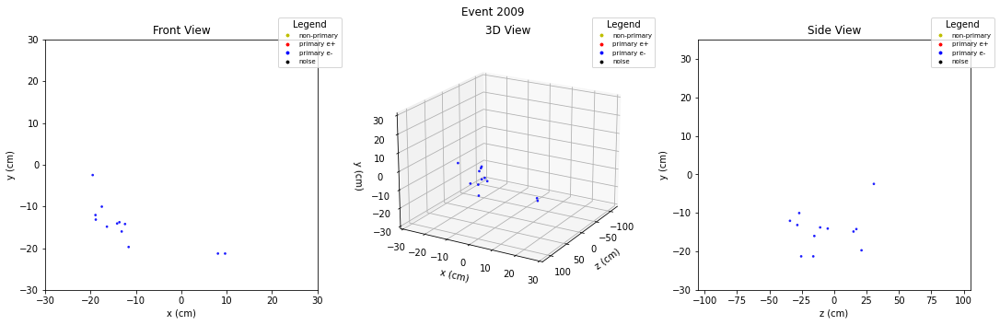
[27]:
# See the prediction contents
pred_contents = atk.get_event_contents(pred)
# Also reindex to get the same iEvent with the dataframe
pred_contents.index = crop_df.iEvent.unique()
pred_contents.index = pred_contents.index.rename("iEvent")
pred_contents
[27]:
| e+ | e- | sec | noise | tot | |
|---|---|---|---|---|---|
| iEvent | |||||
| 0 | 3.0 | 25.0 | 0.0 | 2.0 | 30.0 |
| 1 | 0.0 | 17.0 | 0.0 | 1.0 | 18.0 |
| 2 | 0.0 | 8.0 | 0.0 | 0.0 | 8.0 |
| 3 | 10.0 | 0.0 | 0.0 | 0.0 | 10.0 |
| 4 | 12.0 | 0.0 | 0.0 | 0.0 | 12.0 |
| ... | ... | ... | ... | ... | ... |
| 3088 | 8.0 | 16.0 | 0.0 | 1.0 | 25.0 |
| 3089 | 21.0 | 0.0 | 0.0 | 0.0 | 21.0 |
| 3090 | 0.0 | 20.0 | 0.0 | 0.0 | 20.0 |
| 3091 | 0.0 | 18.0 | 0.0 | 0.0 | 18.0 |
| 3093 | 0.0 | 6.0 | 0.0 | 0.0 | 6.0 |
2744 rows × 5 columns
[28]:
# This was the acceptance condition for pair events.
pred_contents[(pred_contents["e+"] > 6) & (pred_contents["e-"] > 6)]
[28]:
| e+ | e- | sec | noise | tot | |
|---|---|---|---|---|---|
| iEvent | |||||
| 16 | 7.0 | 10.0 | 0.0 | 0.0 | 17.0 |
| 32 | 31.0 | 43.0 | 0.0 | 0.0 | 74.0 |
| 35 | 15.0 | 7.0 | 0.0 | 0.0 | 22.0 |
| 44 | 18.0 | 22.0 | 0.0 | 0.0 | 40.0 |
| 50 | 29.0 | 22.0 | 0.0 | 0.0 | 51.0 |
| ... | ... | ... | ... | ... | ... |
| 3068 | 8.0 | 37.0 | 0.0 | 0.0 | 45.0 |
| 3072 | 13.0 | 12.0 | 0.0 | 0.0 | 25.0 |
| 3076 | 18.0 | 7.0 | 0.0 | 0.0 | 25.0 |
| 3077 | 8.0 | 28.0 | 0.0 | 0.0 | 36.0 |
| 3088 | 8.0 | 16.0 | 0.0 | 1.0 | 25.0 |
161 rows × 5 columns
[29]:
# Create single event objects, and plot them.
for i in [14,28,31,40,44]:
atk.EventSelector(testpred, i).plot("front 3D side", save=True)
Saving figure to colored_plots14.png done.
Saving figure to colored_plots28.png done.
Saving figure to colored_plots31.png done.
Saving figure to colored_plots40.png done.
Saving figure to colored_plots44.png done.
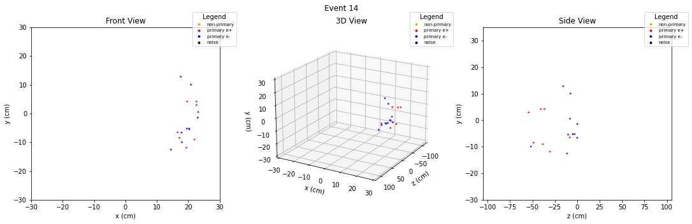
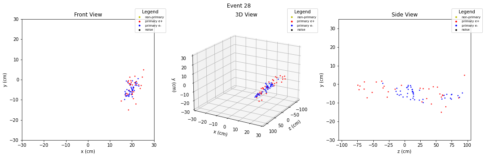
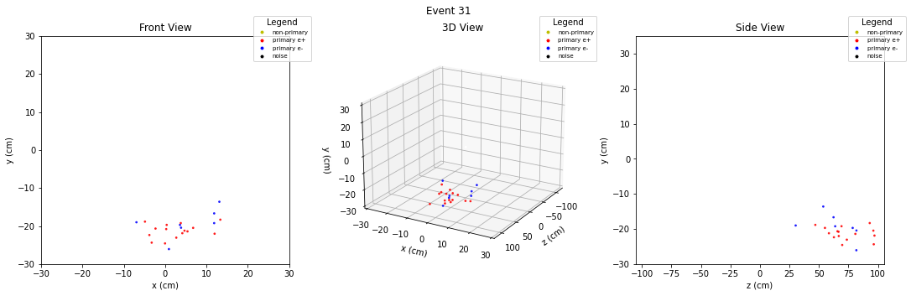
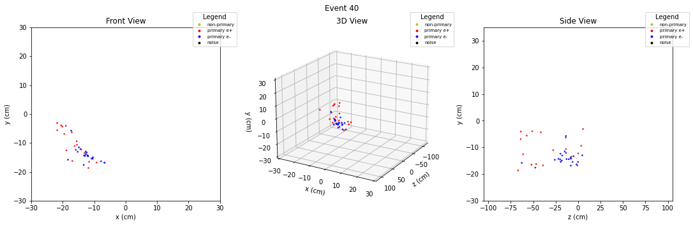
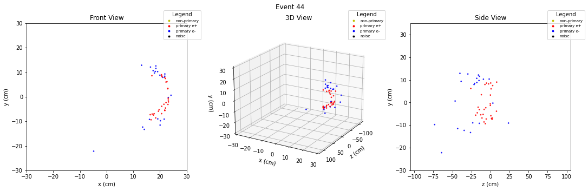
Note for myself:¶
Little info on copying dataframes:
Deep copy is necessary if you want to modify existing features and indices.
Shallow copy is required if you want to add new features and indices,
but not to modify existing ones.
If you just make modifications on the dataframe, existing one changes.
[30]:
# To get consequent numbering in iEvent column
crop_df2 = crop_df.copy(deep=True)
crop_df2.iEvent = np.unique(crop_df.iEvent.to_numpy(), return_inverse=True)[1]
crop_df2
[30]:
| iEvent | iHit | planeRec | wireRec | timeRec | HitRecTime0 | HitRecTime1 | Charge0 | Charge1 | Ampl0 | Ampl1 | x | y | z | |
|---|---|---|---|---|---|---|---|---|---|---|---|---|---|---|
| 0 | 0 | 0 | 1 | 274 | -3.944810e-07 | -3.937450e-07 | -3.901820e-07 | 1.067980 | 0.515748 | -100 | -100 | -4.89203 | -24.8048 | -68.34180 |
| 1 | 0 | 3 | 3 | 659 | -4.148150e-07 | -4.135760e-07 | -4.110250e-07 | 1.435170 | 0.970757 | -100 | -100 | -8.14744 | -21.1832 | -42.45270 |
| 2 | 0 | 4 | 3 | 660 | -4.209670e-07 | -4.187150e-07 | -4.181900e-07 | 1.522480 | 1.241020 | -100 | -100 | -12.14240 | -18.4606 | -11.03260 |
| 3 | 0 | 5 | 4 | 819 | -4.288450e-07 | -4.267700e-07 | -4.258950e-07 | 1.638570 | 1.475930 | -100 | -100 | 6.74216 | -20.1475 | -15.82110 |
| 4 | 0 | 6 | 4 | 820 | -5.095660e-07 | -5.071270e-07 | -5.069790e-07 | 4.001080 | 4.054890 | -100 | -100 | 7.68226 | -19.6260 | -1.34661 |
| ... | ... | ... | ... | ... | ... | ... | ... | ... | ... | ... | ... | ... | ... | ... |
| 45782 | 2743 | 2 | 3 | 656 | -4.488190e-07 | -4.454320e-07 | -4.471780e-07 | 1.152500 | 1.616040 | -100 | -100 | -14.42050 | -17.1712 | 30.56040 |
| 45783 | 2743 | 4 | 6 | 1244 | -5.039820e-07 | -5.009690e-07 | -5.019740e-07 | 4.568240 | 5.726640 | -100 | -100 | -14.28340 | -14.1802 | 22.02150 |
| 45784 | 2743 | 5 | 7 | 1426 | -4.586560e-07 | -4.553610e-07 | -4.569320e-07 | 2.251740 | 2.870170 | -100 | -100 | -12.92460 | -14.7115 | 23.19270 |
| 45785 | 2743 | 6 | 8 | 1628 | -4.978420e-07 | -4.947950e-07 | -4.958720e-07 | 1.580360 | 1.600990 | -100 | -100 | -13.69430 | -12.9596 | 17.83370 |
| 45786 | 2743 | 7 | 9 | 1811 | -4.841770e-07 | -4.802230e-07 | -4.831150e-07 | 0.927226 | 1.270110 | -100 | -100 | -13.96700 | -12.4149 | 38.90280 |
45787 rows × 14 columns
[31]:
dfpred = atk.combine_dfpred(crop_df2, pred)
dfpred
[31]:
| iEvent | iHit | planeRec | wireRec | timeRec | HitRecTime0 | HitRecTime1 | Charge0 | Charge1 | Ampl0 | Ampl1 | x | y | z | track | |
|---|---|---|---|---|---|---|---|---|---|---|---|---|---|---|---|
| 0 | 0 | 0 | 1 | 274 | -3.944810e-07 | -3.937450e-07 | -3.901820e-07 | 1.067980 | 0.515748 | -100 | -100 | -4.89203 | -24.8048 | -68.34180 | 1 |
| 1 | 0 | 3 | 3 | 659 | -4.148150e-07 | -4.135760e-07 | -4.110250e-07 | 1.435170 | 0.970757 | -100 | -100 | -8.14744 | -21.1832 | -42.45270 | 2 |
| 2 | 0 | 4 | 3 | 660 | -4.209670e-07 | -4.187150e-07 | -4.181900e-07 | 1.522480 | 1.241020 | -100 | -100 | -12.14240 | -18.4606 | -11.03260 | 2 |
| 3 | 0 | 5 | 4 | 819 | -4.288450e-07 | -4.267700e-07 | -4.258950e-07 | 1.638570 | 1.475930 | -100 | -100 | 6.74216 | -20.1475 | -15.82110 | 2 |
| 4 | 0 | 6 | 4 | 820 | -5.095660e-07 | -5.071270e-07 | -5.069790e-07 | 4.001080 | 4.054890 | -100 | -100 | 7.68226 | -19.6260 | -1.34661 | 2 |
| ... | ... | ... | ... | ... | ... | ... | ... | ... | ... | ... | ... | ... | ... | ... | ... |
| 45782 | 2743 | 2 | 3 | 656 | -4.488190e-07 | -4.454320e-07 | -4.471780e-07 | 1.152500 | 1.616040 | -100 | -100 | -14.42050 | -17.1712 | 30.56040 | 2 |
| 45783 | 2743 | 4 | 6 | 1244 | -5.039820e-07 | -5.009690e-07 | -5.019740e-07 | 4.568240 | 5.726640 | -100 | -100 | -14.28340 | -14.1802 | 22.02150 | 2 |
| 45784 | 2743 | 5 | 7 | 1426 | -4.586560e-07 | -4.553610e-07 | -4.569320e-07 | 2.251740 | 2.870170 | -100 | -100 | -12.92460 | -14.7115 | 23.19270 | 2 |
| 45785 | 2743 | 6 | 8 | 1628 | -4.978420e-07 | -4.947950e-07 | -4.958720e-07 | 1.580360 | 1.600990 | -100 | -100 | -13.69430 | -12.9596 | 17.83370 | 2 |
| 45786 | 2743 | 7 | 9 | 1811 | -4.841770e-07 | -4.802230e-07 | -4.831150e-07 | 0.927226 | 1.270110 | -100 | -100 | -13.96700 | -12.4149 | 38.90280 | 2 |
45787 rows × 15 columns
[32]:
# Another way to combine dataframe and the event.
# Useful for displaying some histograms.
# Some functionalities are only available for inference.
dfpred = atk.combine_dfpred(crop_df, pred)
[33]:
atk.draw_histogram(
dfpred,
np.linspace(0,100,100),
"time of arrival - track time")
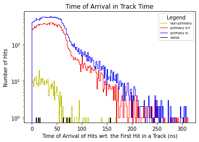
[34]:
atk.draw_histogram(crop_df, np.linspace(0,100,50), "hits per event", histtype="step")
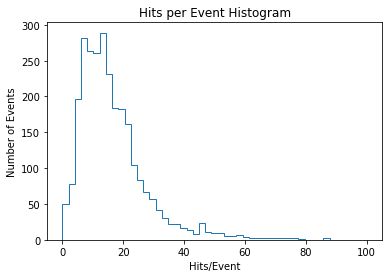
[35]:
atk.draw_histogram(
dfpred,
None,
"reconstructed tracks per event")
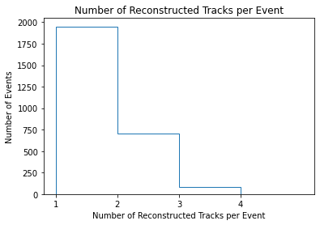
[36]:
atk.draw_histogram(
dfpred,
None,
"reconstructed hits per event")
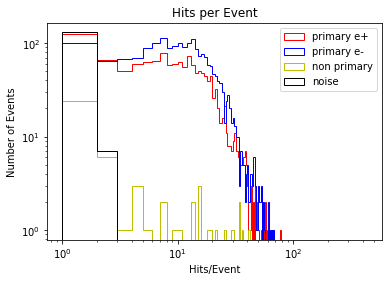
[37]:
atk.draw_histogram(
dfpred,
None,
"reconstructed hits per event (pair)")
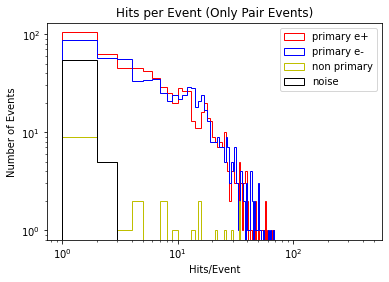
[38]:
# Number of hits for all tracks in all events
dfpred.groupby("iEvent").track.value_counts()
[38]:
iEvent track
0 2 25
1 3
3 2
1 2 17
3 1
..
3088 3 1
3089 1 21
3090 2 20
3091 2 18
3093 2 6
Name: track, Length: 3625, dtype: int64
[39]:
dfpred.groupby("iEvent").track.value_counts().describe()
[39]:
count 3625.000000
mean 12.630897
std 9.951596
min 1.000000
25% 5.000000
50% 11.000000
75% 17.000000
max 77.000000
Name: track, dtype: float64
[40]:
pred_contents = pred_contents.groupby("tot").mean().reset_index()
pred_contents
[40]:
| tot | e+ | e- | sec | noise | |
|---|---|---|---|---|---|
| 0 | 1.0 | 0.540541 | 0.243243 | 0.216216 | 0.0 |
| 1 | 2.0 | 0.769231 | 1.076923 | 0.153846 | 0.0 |
| 2 | 3.0 | 0.952381 | 2.000000 | 0.047619 | 0.0 |
| 3 | 4.0 | 1.210526 | 2.754386 | 0.035088 | 0.0 |
| 4 | 5.0 | 1.522727 | 3.477273 | 0.000000 | 0.0 |
| ... | ... | ... | ... | ... | ... |
| 70 | 74.0 | 24.333333 | 49.666667 | 0.000000 | 0.0 |
| 71 | 76.0 | 24.500000 | 37.000000 | 14.500000 | 0.0 |
| 72 | 78.0 | 77.000000 | 0.000000 | 1.000000 | 0.0 |
| 73 | 86.0 | 35.000000 | 51.000000 | 0.000000 | 0.0 |
| 74 | 87.0 | 24.000000 | 63.000000 | 0.000000 | 0.0 |
75 rows × 5 columns
[41]:
# Plot to see the distribution of number of hits in all tracks
# with respect to the change in the total number of hits.
plt.style.use("seaborn-dark")
for param in ['figure.facecolor', 'axes.facecolor', 'savefig.facecolor']:
plt.rcParams[param] = '#212946' # bluish dark grey
for param in ['text.color', 'axes.labelcolor', 'xtick.color', 'ytick.color']:
plt.rcParams[param] = '0.9' # very light grey
# plt.grid(color='#2A3459') # bluish dark grey, but slightly lighter than background
from matplotlib.lines import Line2D
leg_handles = [Line2D([0], [0], marker='o', color="None", label='Primary e+',
markerfacecolor='r', markersize=5),
Line2D([0], [0], marker='o', color="None", label='Primary e-',
markerfacecolor='b', markersize=5),
Line2D([0], [0], marker='o', color="None", label='Secondaries',
markerfacecolor='y', markersize=5),
Line2D([0], [0], marker='o', color="None", label='Noise',
markerfacecolor='k', markersize=5)
]
plt.plot(pred_contents.tot, pred_contents["e+"], "r.", alpha=0.7)
plt.plot(pred_contents.tot, pred_contents["e-"], "b.", alpha=0.7)
plt.plot(pred_contents.tot, pred_contents["sec"], "y.", alpha=0.7)
plt.plot(pred_contents.tot, pred_contents["noise"], "k.", alpha=0.7)
plt.grid(color='#2A3459')
plt.xlim(0,100)
plt.ylim(0,70)
plt.title("Average Number of Hits in Tracks Having The Same Number of Total Hits")
plt.xlabel("Number of Total Hits in Events")
plt.ylabel("Average Number of Hits in a Track")
plt.legend(handles=leg_handles, loc="upper right", fontsize=7)
# plt.title("Mean of Non-Primary Hits per Event When Primary Pairs are in Acceptance")
# plt.xlabel("Hits per Event")
# plt.ylabel("Average Noise Hits per Event")
plt.savefig("plots/mean_tracks_all.png", dpi=300, bbox_inches='tight')
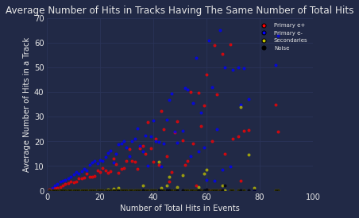
[ ]:
# To revert the seaborn plot styling:
# plt.style.use("default")